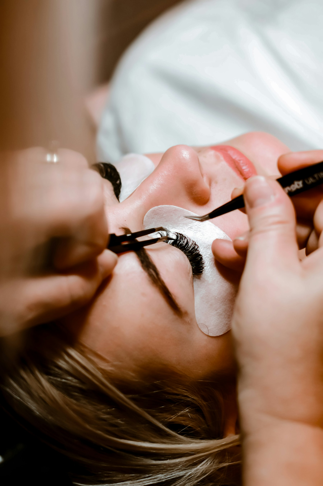

Jetzt neu
Wimpernlifting
Verleiht Ihren Naturwimpern einen tollen Schwung — der perfekte Augenaufschlag, ganz ohne Extensions, für 4–8 Wochen.

Was ist das?
Ihr natürlicher Augenaufschlag
Wimpernlifting formt Ihre eigenen Wimpern von der Wurzel her sanft nach oben — für einen offenen, wachen Blick, ganz ohne Extensions oder künstliche Wimpern. Das Ergebnis wirkt natürlich und ist auch beim Schwimmen oder Sport unkompliziert.
Auf Wunsch kombinieren wir das Lifting mit einer sanften Tönung für einen noch intensiveren Effekt.
Preise
Ein Überblick
Alle Preise laut aktueller Online-Buchung, Stand der Erhebung — bitte im Zweifel telefonisch bestätigen lassen.
Ablauf
So läuft Ihre Behandlung ab
Beratung
Wir besprechen die passende Wölbung für Ihre Augenform.
Silikon-Pad anpassen
Ein weiches Silikon-Pad wird passgenau auf Ihrem Lid platziert.
Wimpern hochlegen
Ihre Naturwimpern werden sanft über das Pad geformt.
Lifting-Lotion
Eine pflegende Lotion fixiert die neue Form von innen heraus.
Tönung (optional)
Auf Wunsch runden wir mit einer sanften Wimperntönung ab.
Vorteile
Das bringt Ihnen die Behandlung
- Natürlich wirkender, wacher Augenaufschlag
- Kein Kleben von Extensions, kein Fremdmaterial
- Haltbarkeit ca. 4–8 Wochen
- Kombinierbar mit sanfter Wimperntönung
Geeignet für
Für wen ist das genau richtig?
- Kurze oder gerade Naturwimpern
- Wunsch, auf Mascara zu verzichten
- Bevorstehende besondere Anlässe
- Wenig Zeit für die Morgenroutine
Häufige Fragen
Gut zu wissen
Je nach individuellem Wimpernwachstum hält das Ergebnis in der Regel vier bis acht Wochen.
Nein. Beim Lifting werden Ihre eigenen Wimpern in Schwung gebracht, es wird nichts angeklebt oder verlängert. Das Ergebnis wirkt dadurch besonders natürlich.
Ja, sobald die Behandlung abgeschlossen ist, können Sie Ihre Wimpern wie gewohnt behandeln — inklusive Wasser, Sport und Mascara, falls gewünscht.
Besonders für alle mit kurzen oder geraden Naturwimpern, die morgens Zeit sparen oder auf Mascara verzichten möchten — und für alle, die sich auf einen besonderen Anlass vorbereiten.
Unsicher?
Nicht sicher, ob das die richtige Behandlung für Sie ist?
Machen Sie den kurzen Behandlungsfinder — in drei Fragen zur passenden Empfehlung.
Weitere Behandlungen